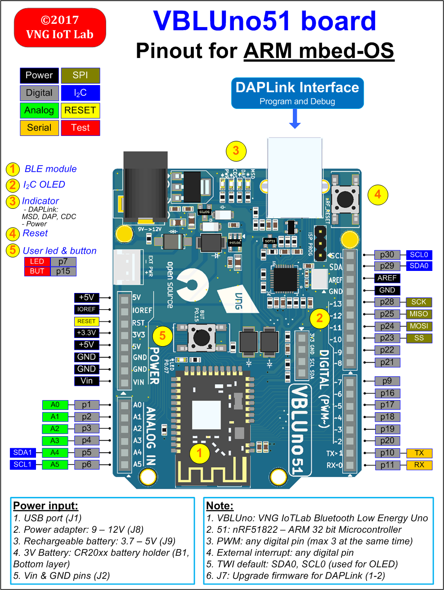
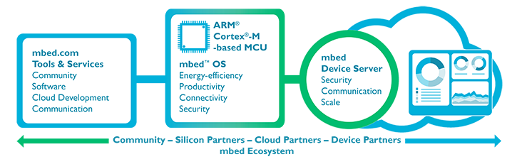
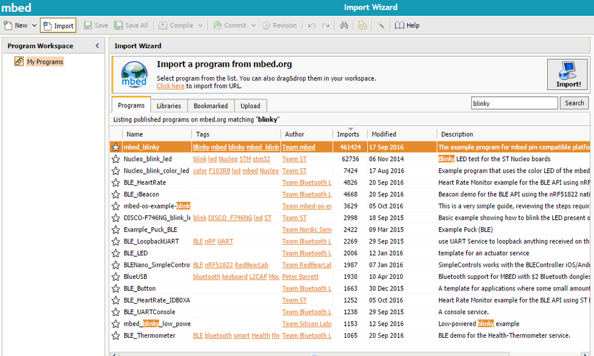
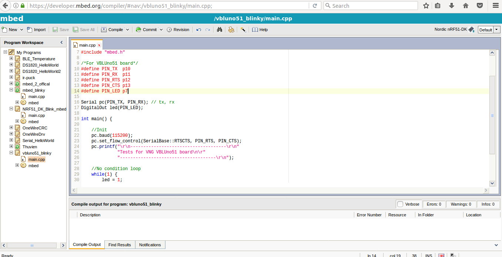

PART 1: PINOUT

##PART 2: INTRODUCE TO MBED-OS
When building an Internet of Things (IoT) system, choosing a platform to design and build a system is very important. ARM Inc is a well-known ARM microcontroller manufacturer, which is widely used in embedded systems and mobile devices. With the advantage of the chip designer, this company provides a complete platform for developing IoT systems, called ARM mbed IoT Device Platform.

Important component of ARM mbed IoT Device Platform is the embedded operating system for ARM Cortex-M microcontrollers, called mbed-OS. It is evaluated as an embedded operating system that is well suited for developing IoT systems with basic features such as: security, multiple interfaces, RTOS, multiple libraries for common types of sensors and peripherals and in particular it is open-source. Let’s take a look at some of the basic features of the mbed OS.
The features and benifits of mbed-OS
| Features | Description |
|---|---|
| Device and component support | - With support for mbed OS on a wide range of ARM Cortex-M based devices, developers can prototype IoT applications quickly on low-cost development boards. |
| - Simple USB drag and drop programming allows you to rapidly prototype without the need for expensive debug hardware. | |
| Realtime Software Execution | With an RTOS core based on the widely used open-source CMSIS-RTOS RTX, mbed OS supports deterministic, multithreaded real time sofware execution. The RTOS primatives are always available, allowing drivers and applications to rely on features such as threads, semaphores and mutexes. |
| Open source | Released under an Apache 2.0 licence, you can use mbed OS in commercial and personal projects with confidence. |
| Ease of Use | - With a modular libary structure, the necessary underlying support for your application will be automatically included on your device. |
| - By using the mbed OS API, your application code can remain clean, portable and simple, whilst taking advantage of security and communications. | |
| - We provide a huge range of code examples that you can import into your own projects, demonstrating how to use each of the APIs. | |
| Community | - The mbed community allows contribution and collaboration between ARM, over 50 partners, and hundreds of thousands of individual developers all over the world. |
| - Many of our components and projects have been contributed by the community. Our forum and Q&A provide developers with community support, alongside GitHub for technical input. | |
| End to End Security | We address security in device hardware, software, communication and in the lifecycle of the device itself: |
| - Hardware Enforced Security At the lowest level of mbed OS, we use a supervisory kernel called uVisor to create isolated security domains which restrict access to memory and peripherals. | |
| -Communications Security We take SSL and TLS, the standard protocols for securing communications on the internet, and allow you to include them in your mbed project with a simple API. | |
| Drivers and support libraries | - Driver support for a wide range of standard MCU peripherals is included in mbed OS. This includes digital and analog IO, interrupts, port and bus IO, PWM, I2C, SPI and serial. |
| - The C libraries of each supported toolchain are also integrated into mbed OS, including implementation of thread safety support. |
###mbed OS Connectivity

Architecture

Typical mbed OS Applications

Useful website for mbed-OS
- https://www.mbed.com/en/platform
- https://www.mbed.com/en/platform/mbed-os/
- https://docs.mbed.com/
- https://developer.mbed.org/
- https://github.com/ARMmbed/mbed-os
##PART 3: PROGRAMMING FOR THE VBLUno51 BOARD USING MBED ONLINE COMPILER
mbed Online Compiler is a compiler for mbed-OS. It works online, you need only a computer with internet connection, you can write code and compile easily for the VBLUno51 board. The following sections presents the steps to using mbed Online Compiler.
Step 1: Register an account on developer.mbed.org
(If you have an account already, you can skip this step)
Access to [https://developer.mbed.org] (https://developer.mbed.org), register an account for developers with mbed OS. It is completely free so you can confidently register.
Step 2: Login
Click Compiler button or access this address https://developer.mbed.org/compiler/

Step 3: Chose Device Platform for application
-
Click on the
Platformbutton in the upper right corner of the screen. TheSelect a Platformwindow appears, click on Add platform -
You select Nordic NRF51-DK board. This board has configuration quite similar to the VBLUno51 board.
-
Next, you choose Add to your mbed compiler

- Click on
Compilerbutton to return to the compiler, the right-hand corner of the browser will display theNordic NRF51-DKboard.
Step 4: Hello World Example
In this step, we are going to make a simple example, with name "vbluno51_blinky”.
-
4.1 Add an existing example to your account
- Click on “Import a program”,
- Search by
mbed_blinkykeywords. - In results list, select
mbed_blinkyexample. Click Import button to add this example to your account

You can edit the project name follow below picture.

- 4.2 Modify program source code in the
main.cppfile
Copy the following source code to main.cpp file.
/********************************************
VBLUNO51 BOARD
mbed Online Compiler
Project: Blink led and transmit via UART (with HWFC)
Note: select NRF51_DK platform
*********************************************/
#include "mbed.h"
/*For VBLUno51 board*/
#define PIN_TX p10
#define PIN_RX p11
#define PIN_RTS p12
#define PIN_CTS p13
#define PIN_LED p7
Serial pc(PIN_TX, PIN_RX); // tx, rx
DigitalOut led(PIN_LED);
int main() {
//Init
pc.baud(115200);
pc.set_flow_control(SerialBase::RTSCTS, PIN_RTS, PIN_CTS);
pc.printf("\r\n-------------------------------------\r\n"
"Tests for VNG VBLUno51 board\n\r"
"-------------------------------------\r\n");
//No condition loop
while(1) {
led = 1;
wait(1);
led = 0;
wait(1);
pc.printf("Finish a period\r\n");
}
return 0;
}

Click on the Save button
- 4.3 Press
Compilebutton to compile the program
The result is a successful compilation, creating an executable file (* .hex) and automatically saving it to your computer


- 4.4 Load executable file into VBLUno51 board
After the VBLUno51 board is connected to computer via USB cable, a partition which has name is DAPLINK will be added to your computer. For downloading executable file into VBLUno51 board, you only need to copy this file into the above partition and wait for this progress is done.

- 4.5 Run application
After loading executable file into VBLUno51 board is done, the application will be run automatically. If every thing is success, you will see LED on the VBLUno51 board is lights on and off at 2 second intervals. Using a terminal software such as Hercules or PuTTY to connect to the VBLUno51 board at 115200 baud speed, you will see results as the below image.